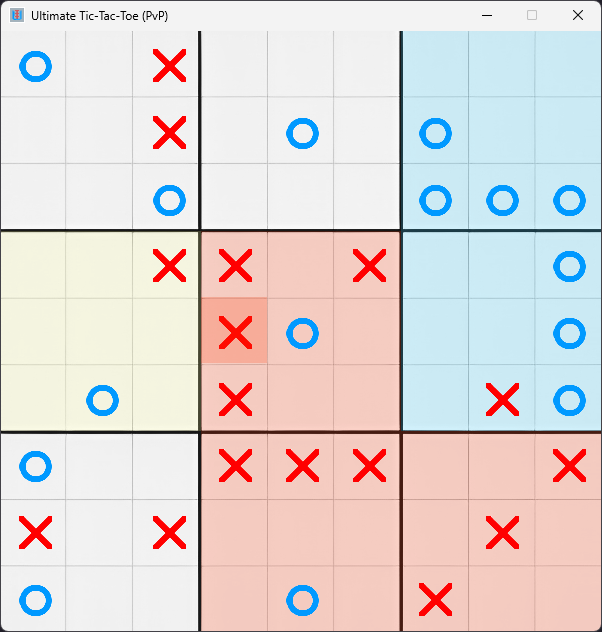

Ultimate Tic-Tac-Toe is a complex, 9x9 version of Tic-Tac-Toe, requiring deep calculation and thought to play.
Inspired by the world of chess engines, I created an AI model using the AlphaZero method to play Ultimate Tic-Tac-Toe.